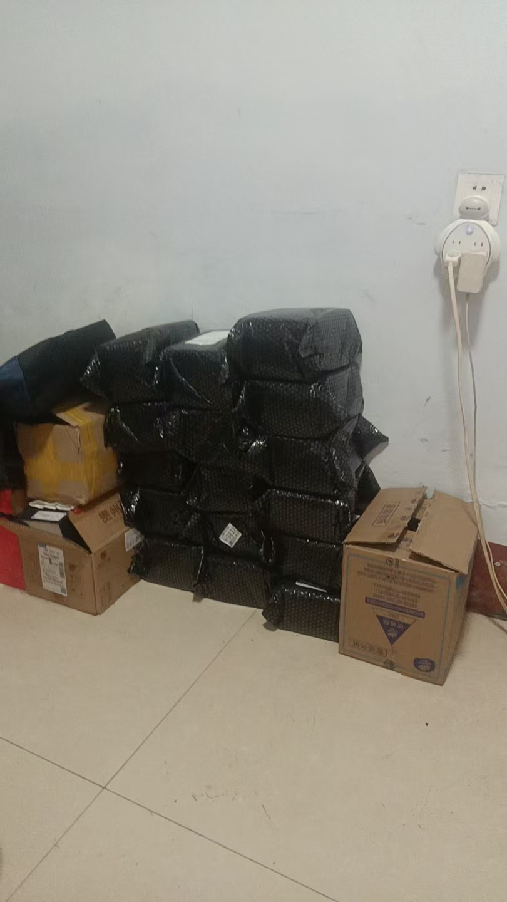

20260701每天早起，真的能学到很多知识 人勤心不懒
修炼修行 原始对话记录每天早起，真的能学到很多知识
人勤心不懒
定当勤奋
我现在在老家，我发现在我那里的这个孩子，跟家人一样，晚上玩手机打游戏，不睡觉
十一点半洗漱，烫脚
第二天十点以后起床，也不吃早饭
无所事事
大人也这样
一上午荒废了，还能干啥
这样下去，一辈子也能毁了
一点一点纠正吧
我每天四点起床，打坐，学习，他们是看不到的

[呲牙][呲牙][呲牙]道藏，还没打开
几部佛经还没读完
小猫也知道勤练兵
雨后天晴，非常清爽
每天四点起床：勤奋是学修的底子
一、本页是什么
本页标题就是主张："每天早起，真的能学到很多知识。人勤心不懒。" 正文是编者回老家时的所见——他看到一个孩子跟家人一样，晚上玩手机打游戏、不睡觉，十一点半才洗漱烫脚，第二天十点以后起床，也不吃早饭，无所事事；大人也这样。于是他感慨"一上午荒废了，还能干啥"，担心"这样下去，一辈子也能毁了"，结论是"一点一点纠正吧"。末了补一句："我每天四点起床，打坐，学习，他们是看不到的。"
二、两条作息的对照
| 对照项 | 老家所见 | 本人 |
|---|---|---|
| 睡觉时间 | 玩手机到深夜，十一点半后 | 早睡（四点起） |
| 起床时间 | 十点以后 | 四点 |
| 上午 | 不吃早饭、无所事事 | 打坐、学习 |
| 状态 | 荒废、无目标 | 人勤心不懒 |
这张表不是拿来做"高低评判"的，而是本页最直观的一层意思：时间怎么用，差别就出在这里。
三、"人勤心不懒"怎么落地
本页没有讲什么玄妙方法，它给的答案极朴素——早起。早起之所以被反复强调，是因为它同时管住了三样东西：
- 时间：一天的"整块时间"从清晨开始；
- 心气：起得来，一天就不容易散；
- 积累：每天固定一段"打坐、学习"，日久见功。
四、"一点一点纠正"
本页最难能的是那句"一点一点纠正吧"。它没有指望一夜之间把人改好，而是承认改习气是个慢活。这一点和本集群《坚持用心学一样，别见一个学一个》相通：少、慢、稳，比多、快、猛更靠得住。
五、常见问题
问：四点起床是不是人人都要照做？ 不必。本页讲的是"勤"字，四点只是他自己的作息。关键是有一段固定、不被打扰的学习时间。
问：孩子晚睡晚起怎么办？ 本页的态度是"一点一点纠正"，不主张硬来。可先从减少睡前玩手机入手（参见本集群《教育孩子有紧迫感》一类的记录）。
问：早起就一定学得好吗？ 早起是条件，不是保证。参见本集群《打坐，站桩 当成活干，完任务，凑时间，没啥用》——光是凑时间，不算学。
六、提醒
- 本篇要点：勤奋与固定时段是学修的底子；
- 作息因人而异，不必照搬四点起；
- 若涉及身心健康问题，请以正规就医与科学作息为准。